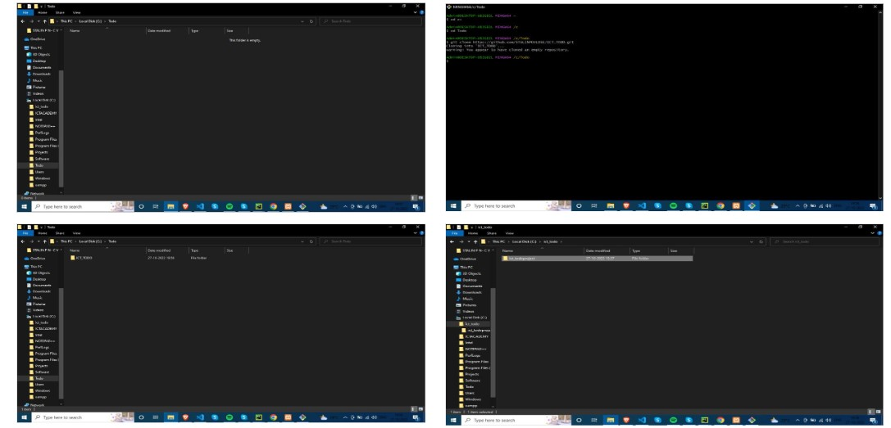

Introduction to DevOps
- DevOps is the acronym given to the combination of Development and Operations.
- It refers to a collaborative approach to make the Application Development team
and the IT Operations team of an organization to seamlessly work with better communication.
- DevOps allows the software or web developers and IT operations to deploy processes
in a collaboration session that is entirely blameless.
Devops learning Objectives
- Understand what DevOps is and the steps to accomplish it.
- Identify teams to implement the process.
- Plan for the transformation with shared goals and timelines.
- Plan and define timelines for goals.
Introduction to Source Code Management
- Source code management (SCM) is used to track modifications to a source code repository.
- SCM tracks a running history of changes to a code base and helps resolve conflicts
when merging updates from multiple contributors.
- SCM is also synonymous with Version control.
- It is a software tool that programmers use to manage source code.
- It tracks modifications to a source code repository and helps deal with merge conflicts.
Git Installation
Steps For Git Installation on Windows 10
- Download and install Git.
- Git bash interface.
- Basic Git commands.
- Create a local repository.
- Connect to the remote repository.
- Push the file to GitHub.
GitHub Account Creation
- To sign up for an account on GitHub.com, navigate to https://github.com/ and follow the prompts.
- To keep your GitHub account secure you should use a strong and unique password. For more information,
see "Creating a strong password.“
- Working with repositories -Creating a repository
Steps for GitHub Account Creation
GitHub
Cloning GitHub repository in local machine.
Step : 1
Download Git for window.
- https://git-scm.com/downloads
- SCM – Source Code Management.
Step : 2
Install Git.
- Default options are click –next. Then, click install.
- GitHub to desktop launching.
Step : 3
Download GitHub Desktop.
- https://desktop.github.com
- Download for windows.
- Install GitHub Desktop.
Step : 4
Clone repository from the internet.
- Repository name – enter/choose path(i.e., bio)- click-clone
- Drive c:\ project\ bio - path folder create- same repository name folder create –
Our project -save as - repository name folder.
- Go to GitHub-click- repository name – view the project details in the GitHub – Push origin.
Clone repository from the internet

GitHub Working with repositories
- Creating a repository
- Cloning a repository
- Forking a repository
- Importing your projects
- Managing collaborators and permissions
- Publishing and managing GitHub Packages
Source code management by using GitHub Desktop
- Source Code Management (SCM) is a process and set of tools used to keep track of changes to the
code files in a source code repository.
- The most common type of source code repository in use these days is a directory (folder)
on your computer containing a set of code files that make up your project.
Source Tree
- Source tree is a fully functional GUI right out of the box that works with Git and Mercurial.
- It's compatible with both Windows or Mac operating systems.
- Detailed tutorials help you get started quickly.
- All commands are accessible with just one click.
Tortoise git
- Tortoise Git is a free open-source client for the Git version control system.
- That is, Tortoise Git manages files over time.
- Files are stored in a local repository.
- The repository is much like an ordinary file server, except that it remembers
every change ever made to your files and directories.
